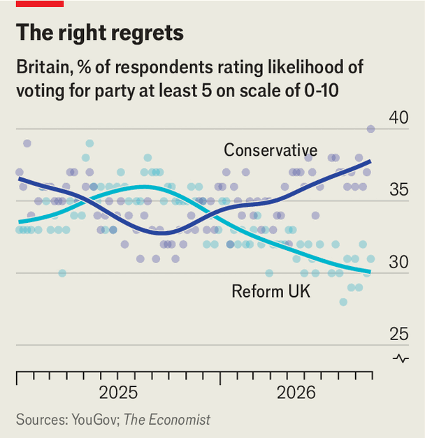

Kemi Badenoch's pitch for power is incoherent
But Britain’s Tories still have a shot at reuniting the right
Oct 8th 2026
“There is a fight coming in British politics,” Kemi Badenoch told the Conservative Party at its annual conference on October 7th. The Tory leader promised a “battle of ideas” with the ruling Labour Party. “This party is now the no-drama party,” she declared.
The Tories are feeling more upbeat and less drama-ridden than they have for a while. This is mostly because they are pleased to have survived. Nigel Farage, the leader of Reform UK, has made it his mission to kill them off altogether and replace them as the dominant party of the right. This time last year he seemed to stand a chance. Reform was top of the opinion polls and had a 13-point lead over the Tories. Now, thanks to a modest recovery by the Conservatives and a big drop in support for Reform, that gap stands at just two points. (Labour, meanwhile, has moved back up to first place.)
Reform has also failed to hollow out Ms Badenoch’s flock of MPs, having set a deadline of May this year for disaffected Tories to defect. They came in a trickle rather than a flood, with just four sitting parliamentarians swapping their blue rosettes for teal. Reform has eight MPs to the Conservatives’ 118.
Some Tories remain keen to “unite the right” through an electoral pact between the two parties. Ms Badenoch is not one of them. Reform, she proclaimed in her speech, “are not like us; we are not like them.” She instead wants to reclaim the Conservatives’ long-held position as Britain’s only viable right-wing party. Reform voters are to be won back by an aggressive stance on cultural issues such as immigration; moderates by a credible strategy to help the economy grow.
Does she have one? On the eve of the conference, Ms Badenoch made her most detailed pitch yet in the form of a 100-page pamphlet titled “The Right Way”. In it, she tries to explain the principles that would guide a future Tory government, and to describe how the last one went wrong. Ms Badenoch argues that inefficient taxes, fiddly regulation and a lackadaisical approach to cultural cohesion have made Britain poorer and unhappier.
The biggest announcement of her speech was an economic one. She promised to exempt the “family home” from inheritance tax, allowing properties of any value to be passed on without incurring the 40% levy currently applied to estates, mainly homes, worth more than £1m.
Meanwhile, clear blue water is beginning to separate the Tories and Reform, despite similar views on issues such as human-rights law (against) and military spending (for). Take Brexit. At Labour’s conference in late September Andy Burnham, the prime minister, promised to reopen a debate over whether Britain should rejoin the EU. Mr Farage’s response was “bring it on.” Ms Badenoch, in contrast, dismisses the issue as a distraction from more pressing problems.
Eurosceptic Tories, of whom there are plenty, might sympathise with Mr Farage’s line. But at a fringe event at their conference Sir Bernard Jenkin, a veteran MP who helped to lead the Leave campaign, warned them: “Do not defend Brexit; Brexit is toxic with the voters.”
The same is true of other red meat that Reform holds out to its voters. Many Tories share Mr Farage’s dislike of net-zero carbon targets and mass immigration, but the party is holding its line on both. Ms Badenoch, sanely, states that “climate change is real” and praises black Britons whom some Reform politicians say can never be counted as English.
Despite their cheerier mood, the Conservatives score just 20% on our tracker of polling averages—dire by historical standards, and still worse than Reform. But Ms Badenoch’s party may have more reasons for optimism than its rivals to the right.
YouGov, a pollster, regularly asks voters how likely they are to support each party at an election, on a scale of zero to ten. Reform has more die-hards than the Tories: 11% say they are sure to back them, compared with 6% for the Tories. But 53% say their chance of voting Reform is zero, compared with 31% for the Tories. And among those who say they might support a party, with a five-out-of-ten chance or more, the Tories are ahead. Nearly 40% of voters are open to voting for them, compared with about 30% for Reform.

Moreover, based on current polling, tactical voting is likely to be crucial in the next election. This helps the Conservatives. More in Common, another pollster, has found many left-of-centre voters would consider switching to the Tories if they thought doing so would see off Reform. Mr Farage’s party is also losing out to Restore Britain, a far-right outfit led by a former Reform MP.
The Conservatives insist that, if they were returned to government, they would usher in a pro-business regime and juice the economy. They have committed to cut taxes that hold back growth and to reduce the deficit, lowering Britain’s steep borrowing costs. “The state lacks the capacity to carry out its own decisions,” Ms Badenoch writes in “The Right Way”; better to have a smaller and more efficient government. She also vows to reduce the barriers to building new infrastructure.
The rhetoric is promising. Alas, it seems to bear little relationship to Tory policies. Ms Badenoch promises to cut spending, but also to keep the “triple lock” on state pensions, an expensive ratchet which Mr Burnham wants to overhaul. She has said nothing about how she will control the cost of the National Health Service—one of the biggest areas of government spending. She wants to deregulate, but defends the “green belt” of land that stops cities from expanding. And her headline inheritance-tax cut would do little for economic growth. Instead, it would disincentivise the rich elderly from selling homes that are bigger than they want to live in, snarling up the housing market.
Having survived their brush with political death, the Tories now have a shot at retaking their traditional monopoly of the right. Ms Badenoch is much more popular than Mr Farage, and many of her principles are sound. But if her party cannot act on them, it will squander its chance. ■